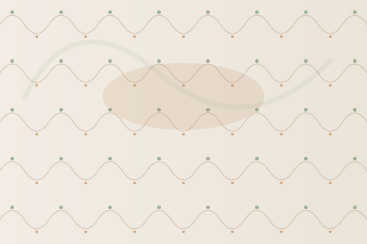

Whole-life alignment, in a plan you can live with
An intensive, integrative consultation to map your body, mind, rhythms, and priorities into a clear agenda for change — without medical promises, only practical guidance.

What this intensive delivers
Focused intake
One deep session collecting context: sleep, stressors, relationships, digestion, energy, and goals.
Practical agenda
A short, prioritized plan you can start in the first week — measurable and reviewable.
Follow-up cadence
Gentle checkpoints matched to your needs: timing, metrics, and who to loop in.
How it works
- Preparation: A short form primes the visit — what matters most, and key history.
- Intensive session: A structured review of domains to build an integrative agenda.
- Focused interventions: Small, evidence-minded steps (sleep, movement, nutrition, mindfulness, coordination with other care).
- Follow-up: A tailored cadence (text, call, or brief video) and a shared agenda to track progress.
Questions people ask
Do you offer diagnosis or medical treatment?
This program is educational and integrative. We do not replace emergency or specialist care. We collaborate with your clinicians when needed.
How long until I see change?
Changes vary. The agenda emphasizes early, trackable steps within 2–6 weeks with iterative review cycles.
Is this covered by insurance?
Coverage varies. We provide documentation that may be submitted to insurers; check your plan.
Ready to translate your life into an actionable plan?
Start with a single intensive session and a clear follow-up rhythm tailored to you.
Voices from the work